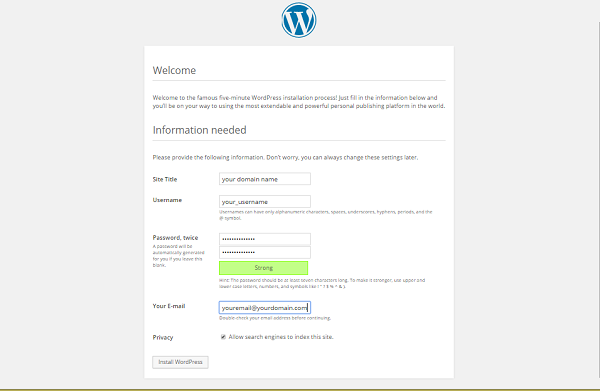
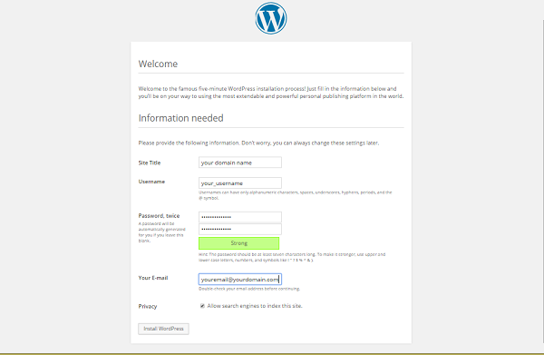

http://your_domain_name_or_IP
You are redirected to the WordPress admin page:
http://server_domain_name_or_IP/wp-admin/install.php
WordPress then prompts you to log in again with your new credentials. Do so now and click Log In.

Installing WordPress on a LAMP server for Fedora.
Difficulty: 1
Time: 15 minutes
WordPress has become much more than its humble beginnings in 2003 as a self-hosted blogging tool; it is the Internet's leading content management system (CMS). This open-source CMS powers all types of sites, including major brands such as The New Yorker, Variety, TechCrunch, and Best Buy. With a MySQL and PHP architecture, WordPress is easy to install and has endless options for website configuration thanks to tens of thousands of plugins and themes from its rich and active community.
This tutorial will walk you through setting up WordPress on a Fedora™ system. The steps will be for a non-root user with sudo (administrator) privileges.
Make sure that you have a non-root user with sudo (administrator) privileges set up on your server. You'll also need a Linux, Apache, MySQL, and PHP (LAMP) stack configured. Be sure that Apache, MySQL, and PHP are up and running.For a how-to on installing a LAMP stack on a specific server, see Build a LAMP stack (Linux, Apache, MySQL, PHP) – Fedora.
Make note of your MySQL root account (admin) password. You'll need it for these tasks.
yum:
Set up your MySQL database with an administrator, so that WordPress has a place to store all your site and user information.
Remember: All MySQL code statements must end with a semi-colon (;).
GRANT is one of the account management statements the MySQL server notices and loads into memory right away. So a manual reload/restart should not be necessary. But if you'd like, you can check the permissions using SHOW GRANTS: Flush forces a reload of the cache.
wget.
This URL will always link to a compressed file of the latest stable version of WordPress.
Create a directory called wordpress in your home directory.
wp-config.php.
MySQL settings…) and enter your corresponding values of the three DB_ variables (DB_NAME, DB_USER, and DP_PASSWORD) with your information.
After you've configured WordPress, transfer the files to Apache's root directory so that the application can serve content to your site visitors.
rsync, a reliable file transfer and synchronization program.
Good news: The rest of your installation will be done through the WordPress web interface.
http://server_domain_name_or_IP/wp-admin/install.php
WordPress then prompts you to log in again with your new credentials. Do so now and click Log In.
All done! The dashboard of your new site displays.

Congratulations! You have installed WordPress and created the beginning of your own web site.
From here, you have many options for customizing your WordPress setup. A popular one is making pretty permalinks. See Set up WordPress Pretty Permalinks on Apache – ALL DISTROS for a step-by-step guide.
For a how-to on installing WordPress on a LEMP stack, see Install WordPress on your LEMP server – Fedora.